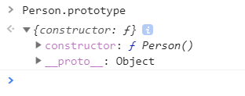
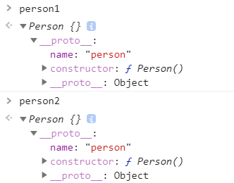
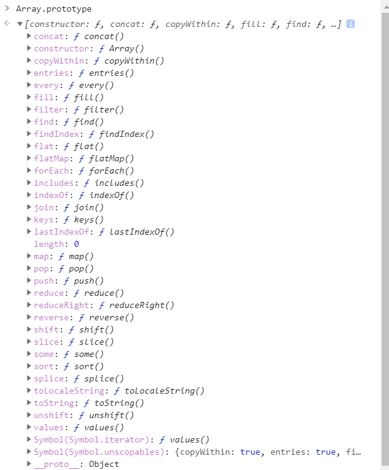
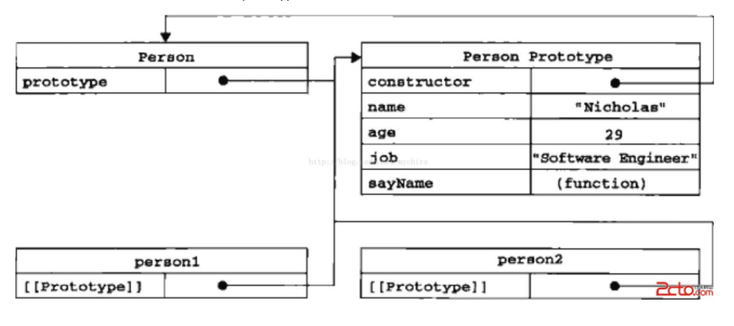
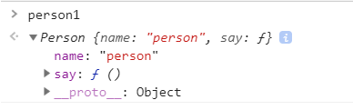

作为一个致力于前端开发的人员，能够熟练掌握javascript的原理和机制是每个小白的必经之路，这也是最痛苦的。有人说前端功力好不好最主要的就是看对js的掌握能力，有人说十年也啃不完一门javascript。而我们能够知道的是：javascript是每个前端学习的核心技能（想想之后的node.js、vue.js，颤抖吧！！！）
本期主要介绍一下js当中的prototype原型（emmm,不知道你们觉得难不难，反正我当时看了许多博客都一知半解，也许现在也是，所以不足之处，请留言指教。。）
function Person() {//首先随便定义一个函数
}在控制台看看这个函数的prototype有什么

我们发现里面有两个东西：constructor 和 __protot__，并且constructor指向Person这个函数，而__prototype__展开后有许多方法，并且也存在一个constructor
(这里的展开我就不贴图了，大家要自己动手才能对知识有更深刻的体会，千万不要做伸手党，只会坑自己的，这点我是深有体会)
这时候我们会发现，每个函数都有一个prototype属性，prototype包含函数实例共享的方法和属性。
接下来我们继续，通过Person函数创建两个实例对象
function Person() {
}
Person.prototype.name = "person"//在Person的原型上添加一个name属性
var person1 = new Person()
var person2 = new Person()

我们发现两个实例化对象中都继承到了name这个属性，所以说当通过new来生成一个类的对象时，prototype对象的属性就会成为实例化对象的属性。
现在我们大概知道了，在js中,你创建的每一个函数中都会产生一个prototype,这个函数以及它的实例化对象都可以用到prototype中的共享方法。我们也发现除了js本身给出的prototype的方法外，我们也可以在prototype中添加自定义方法。
我们再看一个很有意思的东西

看看我们发现了什么新大陆哈哈哈，原来我们之前用的数组方法都是从Array原型中来的,正因为js将这些方法写在Array.prototype中,所以我们才能在定义的数组中使用它。
(你不相信？？那你可以自己动手试试。)
Array.prototype.hahaha ="balabal" //在Array.prototype中添加一个新属性hahaha
var arr = [];
var arr1 = new Array;
//在控制台中输入arr.hahaha 或 arr1.hahaha ,你看看结果是不是“balabal”
现在知道为什么说prototype是js中的一个重要机制了吧

之前我说自己觉得原型很难，就是因为对prototype和__proto__混淆不清
看图我们可以发现，在Person prototype中存在constructor并且指向其构造函数，而person1 和person2的__proto__都指向其实例化的构造函数Person的原型
用等式可以如此表示
Person.prototype == person1.__proto__ //true
Person.prototype.constructor === Person // true
function Person(){
this.name ="person"
}
var person1 = new Person;
console.log(person1.name)
person1.name="person1"
console.log(person1.name)
// person person1
在js查找对象内的属性时，都会遵从一个方法。JS引擎先寻找对象本身的属性，找到就输出，如果找不到，就到它的原型去找，如果还是找不到，就继续往原型的原型去找。如果直到最顶层的Object.prototype，若还是找不到，就会返回undefined。
例如上图，第一次输出时由于namez属性只在person1的原型Person.prototype中,所以输出Person函数中的name值，之后在person1中添加name属性，所以直接输出person1中的name值
function Person() {
this.name = "person"
this.say = function () {
console.log("say prototype win")
}
}
var person1 = new Person;

prototype的作用可以理解为产生一个共享的属性和方法，有点类似继承的意味。
如图，如果我们定义一个构造函数Person，并且实例化一个函数person1，这样我们发现，在创建person1的时候，naem属性和say方法就已经产生在person1函数中了，那如果我们创建大量的实例，那不是每个实例都会先将构造函数的属性和方法加入进来，这种共享方式是不是感觉有点low呢？（而且还浪费系统资源）现在了解了prototype,如果我们将这些属性和方法写在Person函数的原型上，那么它的实例化函数需要使用这些方法的时候直接找到原型上即可，这样就真正实现了共享。（大家可以自己动手把共享方法写在Person.prototype中试试呢!!）
优点：属性和方法定义在原型上，那么所有实例对象就能共享，不仅节省了内存，还体现了实例对象之间的联系。
关于原型差不多就是这些，以后有新的看法也会继续更新的，如果以上哪里有不对的地方，请务必要告诉我，谢谢！